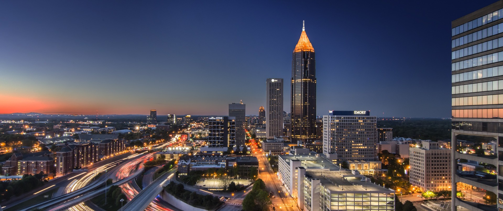

Atlanta, Georgia, often dubbed "The Capital of the South," is a vibrant metropolis blending rich history with modernity. Renowned for its diverse culture, booming economy, and influential role in civil rights, Atlanta offers an eclectic mix of attractions, from the historic Martin Luther King Jr. National Historic Site to the dynamic culinary scene and sprawling green spaces like Piedmont Park.
Atlanta, situated in the East Fall Line region, boasts a temperate climate with mild winters and warm summers. Its scenic landscape is defined by rolling hills, lush forests, and the majestic Savannah River. Outdoor enthusiasts revel in its abundance of parks, trails, and waterways, while its central location provides easy access to beautiful night life and vast patches of greenery.
Atlanta is home to a diverse population that includes African Americans, Caucasians, Hispanics, Asians, and individuals from various other ethnic backgrounds. This diversity enriches the cultural landscape of the city, with communities celebrating their unique heritage through festivals, cuisine, and traditions. Atlanta's inclusive spirit fosters a sense of belonging for residents from all racial and ethnic backgrounds, contributing to its vibrant and cosmopolitan atmosphere.
| Race | Population | Percentage |
|---|---|---|
| Black or African American | 235,324 | 47.7% |
| White | 182,623 | 39.1% |
| Asian | 24,637 | 4.99% |
| Hispanic | 15,785 | 3.28% |
| United States | Georgia | Augusta |
|---|---|---|
| $74,580 | $67,730 | $118,074 |